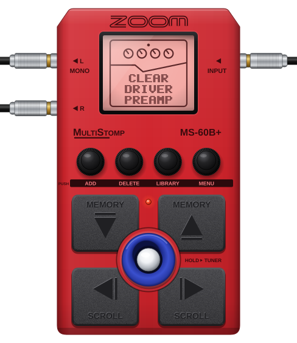
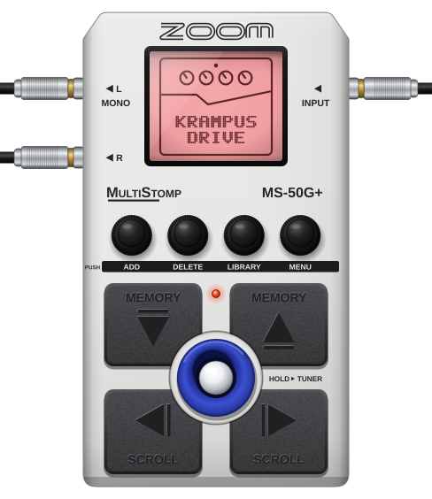
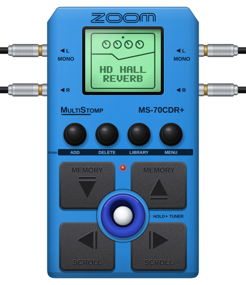
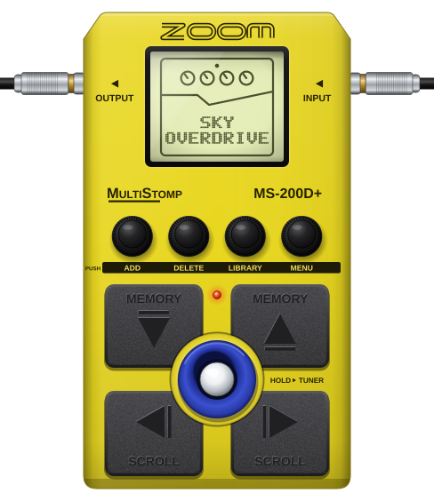
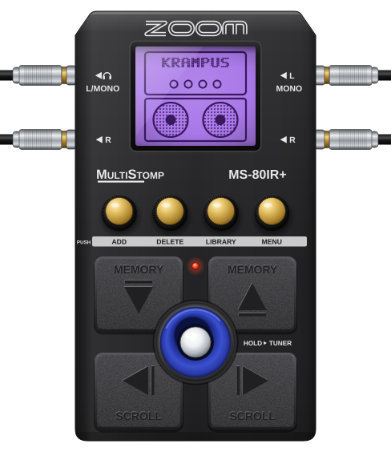
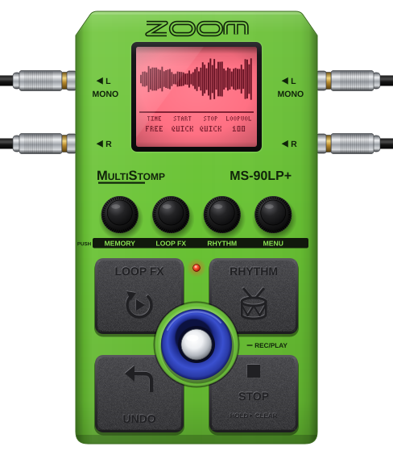
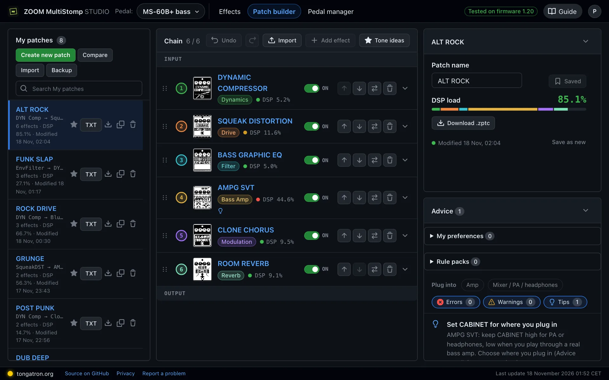
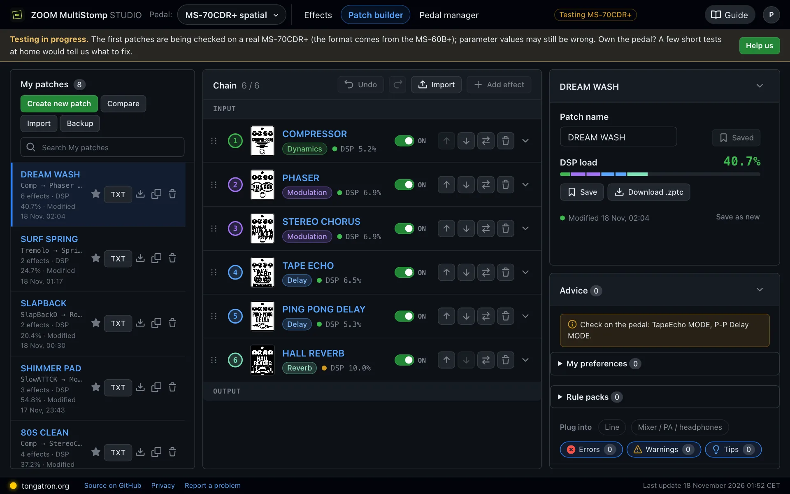
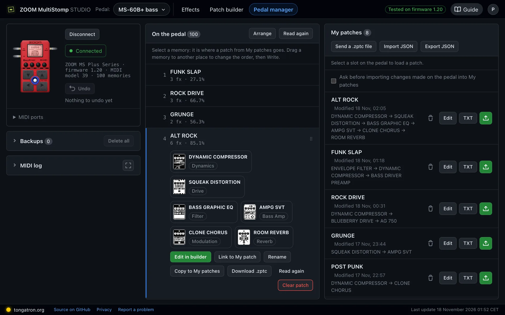
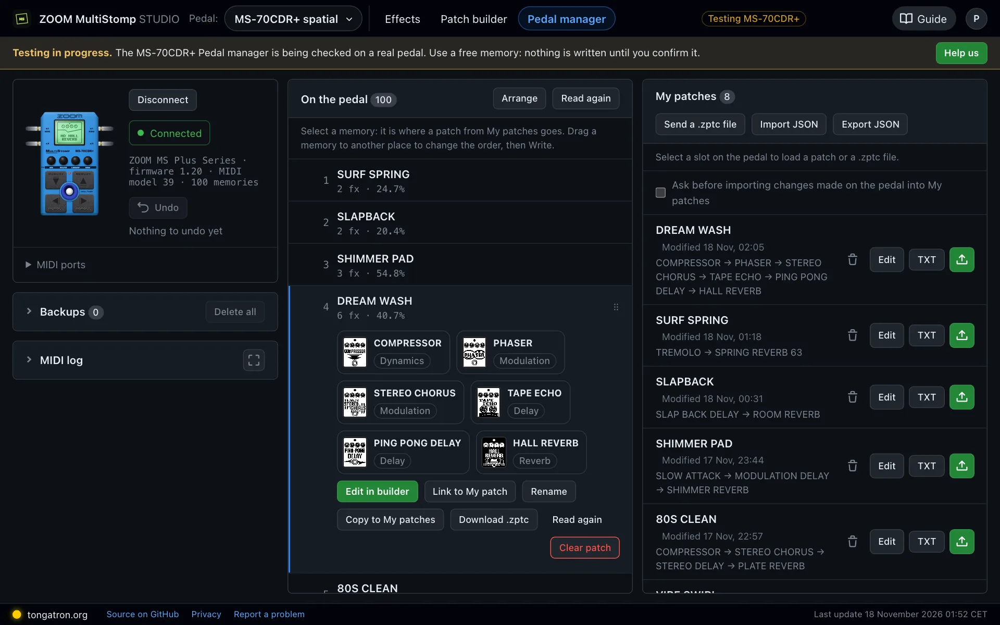

MS-60B+Bass
Tested on firmware 1.20- 97 effects
- 11 bass amps
- 12 advice styles
The full studio: advice on effect order and levels with sources, style profiles, and the Pedal manager to read and write the pedal over USB.
ZOOM MultiStomp Studio · for the MS-60B+ bass, MS-50G+ guitar, MS-70CDR+ spatial, MS-200D+ drive, MS-80IR+ amp and MS-90LP+ looper pedals
Browse every effect with the original ZOOM text, build a 6-effect chain with a live DSP meter, then export a .zptc file for Handy Guitar Lab or write it to the MS-60B+, MS-50G+ or MS-70CDR+ over USB. A free account keeps your patches safe on every device.






Patch builder and Pedal manager · MS-60B+ and MS-70CDR+
The two tools at the heart of the studio, the same for the MS-60B+ bass and the MS-70CDR+ spatial pedal, each with its own effects and advice. Switch the pedal above a picture to see its page.
Your saved patches at the left, the chain in the middle, the patch and its advice at the right.
.zptc file for Handy Guitar Lab.

Connect the pedal with a USB cable: the patches stored on it next to the ones you saved, without Handy Guitar Lab.


The Pedal manager works in Chrome or Edge on a computer (Web MIDI); the USB protocol is not documented by ZOOM. The MS-70CDR+ is being tested on a real pedal: until the tests are done, write to a free memory and check the patch on the pedal. The MS-50G+ guitar has both tools too, in beta.
Pedals
Switch between them at the top of every page of the studio. The bass version is tested on a real pedal and the spatial version is being tested; the guitar, drive, amp and looper pedals are in beta, waiting for testers.

The full studio: advice on effect order and levels with sources, style profiles, and the Pedal manager to read and write the pedal over USB.
Built from the official MS-50G+ documentation with the same file format as the MS-60B+. Not tested on a real pedal yet: until it is, check generated patches on the pedal.
Built from the official MS-70CDR+ documentation. The effects list is ready. Tests on a real pedal are under way; until they are done, check generated patches on the pedal.
Effects page and Guide, from the official Effects List. Plus a read-only Pedal manager. Not tested on a real pedal yet: the Patch builder needs the pedal's effect IDs.
Effects page and Guide, with the estimated DSP load of each effect, plus a read-only Pedal manager. Not tested on a real pedal yet.
A looper, so no effect chain: the Effects page lists its loop effects, rhythms and specifications from the official manual, and the Loop tools work out loop lengths and tempos, with tap tempo and a song planner. Not tested on a real pedal yet.
How it works
Nothing to install and no account needed to start. Sign in when you want your patches kept safe and on every device.
Pick up to 6 effects, drag them into order and set every parameter with the real ranges.
Watch the DSP load against the 100% limit and read the advice before you leave the desk.
Download the .zptc file for Handy Guitar Lab, or connect the MS-60B+ or MS-70CDR+ by USB and write it from the Pedal manager.
A look inside
Every page fits the window: the page itself never scrolls, only the lists inside it. These are the real pages, shown for the MS-60B+.
All 97 effects of the MS-60B+ (127 on the MS-50G+), described exactly as in the ZOOM Effects List.

Up to 6 effects per patch, as on the pedal. Search names and descriptions, or narrow the list by category.

Free account
You can use everything without signing in, but then your work lives only in one browser. A free account keeps it on the server and brings it to every device where you sign in.
Only your email and a password are needed. No newsletter, no tracking cookies: see what is stored.
Features
For the MS-60B+, MS-50G+ and MS-70CDR+, unless it says otherwise. The MS-200D+, MS-80IR+ and MS-90LP+ have the effects library and a Guide so far, and the MS-90LP+ has Loop tools.
Every effect with the original ZOOM Effects List text, parameters and ranges, placement tips and an estimated DSP load. Search by effect, model or parameter; filter by category and feature.
Up to 6 effects per patch, reorder by dragging or from the keyboard, undo and redo.
The load of each effect and of the whole chain, on the same scale as the Handy Guitar Lab "Processor" meter.
A file that imports into Handy Guitar Lab. On the MS-60B+ it round-trips byte for byte against real exports.
Save, save as new, compare two versions, import and back up. Kept in your account when you sign in.
Read and write MS-60B+, MS-50G+ and MS-70CDR+ memories over USB, with a backup before every write and a read-back check. Rename, move, swap and arrange memories too. Read-only on the MS-200D+ and MS-80IR+.
Your patches, settings and pedal backups on every device, for the MS-60B+, MS-50G+ and MS-70CDR+. Download or delete them any time.
Flags effect order, hot levels and heavy chains, explains why with sources and often offers a one-click fix. Bass, guitar and spatial effects each have their own rules.
On the MS-60B+, MS-50G+ and MS-70CDR+, send supported parameter, tempo, routing and R OUT changes to the pedal's current edit buffer without overwriting a stored memory. Beta-pedal support is not verified yet.
Starter chains and advice tuned per playing style, adapted to a bass amp or a mixer.
Installable as an app on a computer or a tablet held sideways, so it works at rehearsals too.
Help wanted
Nobody has tried a patch made here on a real MS-50G+ yet, the MS-70CDR+ is only starting its tests, and the MS-200D+, MS-80IR+ and MS-90LP+ pages are in beta and have not met a real pedal. If you own one, a little of your time would show us what works and what needs fixing.